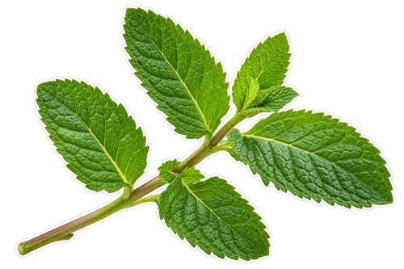
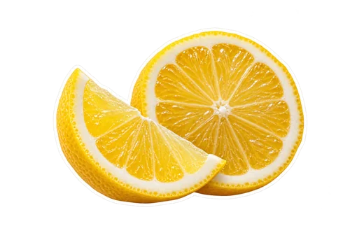

What you will need
- ½ small cucumber, washed and chopped

4 fresh mint leaves- ½ cup cold water

1 teaspoon lemon juice- Optional food-grade wheatgrass powder, using the package directions
How to make it
Wash fresh produce, remove seeds and cores, and cut firm ingredients into small pieces.
Add the water or other liquid to the blender first. Add the prepared produce and blend until finely broken down.
For a thinner drink, pour through a clean fine sieve over a bowl and press gently. Keep the pulp if you prefer a thicker blend.
Taste and adjust with a little more water or citrus. Divide into glasses and serve promptly.
What's in this drink
- Cucumber: In 100 g of the USDA reference food for cucumber, the listed amounts are 16.4 mcg vitamin K and 0.259 mg pantothenic acid (B5). USDA: Cucumber, with peel, raw.
- Fresh mint leaves: In 100 g of the USDA reference food for fresh mint leaves, the listed amounts are 11.9 mg iron and 1.12 mg manganese. USDA: Spearmint, fresh.
- Lemon juice: In 100 g of the USDA reference food for lemon juice, the listed amounts are 38.7 mg vitamin C and 20 mcg folate (DFE). USDA: Lemon juice, raw.
Nutrient figures are per 100 g of the USDA reference ingredient, not per serving.
Straining and dilution change this cucumber mint green sips, so fiber or minerals listed for raw ingredients cannot be assumed to remain in the same amounts. Spearmint is the USDA reference variety in this cucumber mint green sips; other mint varieties can differ.
Storage
Cover and refrigerate leftovers promptly. Follow the storage directions on opened packaged ingredients. FoodSafety.gov recommends refrigerating perishable food within two hours, or one hour above 90°F, and keeping the refrigerator at 40°F or below.
Short FAQ
What should I check before starting?
Use only a product labeled for food use and follow its directions. Do not treat a powder quantity as a medical dose.
Can I change an ingredient?
Leave out wheatgrass powder for a mild cucumber-mint drink. Add a little apple if you want sweetness.